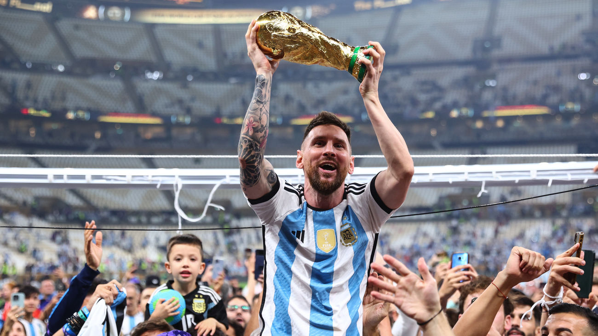

Lionel Messi ha ganado el Balón de Oro en 8 ocasiones, siendo el jugador más galardonado en la historia de este premio. Sus victorias fueron en 2009, 2010, 2011, 2012, 2015, 2019, 2021 y 2023. A lo largo de su carrera compitió por premios muy impresionantes tanto individuales como colectivos, es hasta la fecha el jugador que mas veces fue campeón jugando profecionalmente y en la elite del futbol, dentro de tantos torneos importantes, a ganado 4 UEFA Champions League (UCL) todas con el Fútbol Club Barcelona, en donde también ganó 3 Mundial de clubes, en los años 2009, 2011 y 2015 y si hablamos de sus torneos importantes a nivel seleccion se a consagrado campeón de: Conmebol Copa America en 2 ocaciones (2021 y 2024), y nada mas y nada menos que de la Copa Mundial de la FIFA en la edición de Qatar 2022. Los clubes que defendio durante su carrera han sido F. C. Barcelona (2004-2021) Paris Saint-Germain F. C. (2021-2023) Inter Miami (2023-presente) Dentro de sus buenas caracteristicas podemos destacar: Habilidad individual:Es un jugador hábil individualmente, pero también es un gran jugador en equipo. Visión y asistencia:Tiene una notable capacidad para asistir a sus compañeros. Toma de decisiones:Toma decisiones veloces y lentas a la vez, lo que requiere templanza. Liderazgo:Es un líder natural que promueve la participación, la comunicación y las decisiones horizontales.
